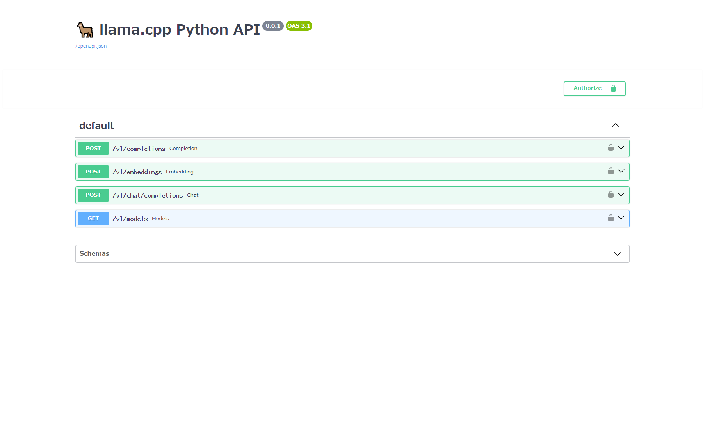

<!DOCTYPE html><html lang="ja-JP"><head><meta charset="utf-8"><meta name="X-UA-Compatible" content="IE=edge"><meta name="author" content="Core"><link rel="icon" href="/images/favicon.ico" type="image/x-icon"><title>開発メモ その356 llama を Web API 経由で動かす · A certain engineer "COMPLEX"</title><meta name="description" content="Introductionllama を試してみて思うのは、コンソールベースで動作しているため、プロダクトでは使いにくい点。実際の ChatGPT みたいに API で提供していたら使いやすいので、そういうものがないかを調べてみた。
What options are there?Python Bind"><meta name="keywords"><meta content="width=device-width, initial-scale=1.0, maximum-scale=1.0, user-scalable=0" name="viewport"><meta content="yes" name="apple-mobile-web-app-capable"><meta content="black" name="apple-mobile-web-app-status-bar-style"><meta content="telephone=no" name="format-detection"><meta name="renderer" content="webkit"><link rel="stylesheet" href="/css/style.css"><link rel="stylesheet" href="/css/blog_basic.css"><link rel="stylesheet" href="/css/font-awesome.min.css"><link rel="stylesheet" href="/css/blogcard.css"><link rel="alternate" type="application/atom+xml" title="ATOM 1.0" href="/atom.xml"><script src="/js/jquery.js"></script><meta name="generator" content="Hexo 5.1.0"></head><body><div class="sidebar animated fadeInDown"><div class="logo-title"><div class="title"><h3 title=""><a href="/">A certain engineer &quot;COMPLEX&quot;</a></h3><div class="description"><p>とある技術者の劣等感</p></div></div></div><ul class="social-links"><li><a target="_blank" rel="noopener" href="https://github.com/takuya-takeuchi"><i class="fa fa-github"></i></a></li><li><a target="_blank" rel="noopener" href="https://twitter.com/takuya_takeuchi"><i class="fa fa-twitter-square"></i></a></li><li><a target="_blank" rel="noopener" href="https://www.facebook.com/takuya.takeuchi.sns"><i class="fa fa-facebook-square"></i></a></li></ul><div class="footer"><div class="p"> <span>© 2020 </span><i class="fa fa-star"></i><span> Core</span></div><div class="by_farbox"><span>Powered by </span><a href="https://hexo.io/" target="_blank">Hexo </a><span> & </span><a href="https://github.com/mrcore/hexo-theme-Anatole-Core" target="_blank">Anatole-Core  </a></div></div></div><div class="main"><div class="page-top animated fadeInDown"><div class="search"><div class="text"><input placeholder="検索ワードを入力してください" id="search-text" onkeypress="javascript:search(event)"></div><div class="btn"><a><i class="fa fa-search"></i></a></div></div><div class="nav"><li><a href="/">ホーム</a></li><li><a href="/archives">アーカイブ</a></li><li><a href="/tags">タグ</a></li><li><a href="/about">自己紹介</a></li></div><div class="information"><div class="back_btn"><li><a class="fa fa-chevron-left" onclick="window.history.go(-1)"> </a></li></div></div></div><div class="autopagerize_page_element"><div class="content"><div class="post-page"><div class="post animated fadeInDown"><div class="post-title"><h3><a>開発メモ その356 llama を Web API 経由で動かす</a></h3></div><div class="post-content"><h1 id="Introduction"><a href="#Introduction" class="headerlink" title="Introduction"></a>Introduction</h1><p>llama を試してみて思うのは、コンソールベースで動作しているため、プロダクトでは使いにくい点。<br>実際の ChatGPT みたいに API で提供していたら使いやすいので、そういうものがないかを調べてみた。</p>
<h1 id="What-options-are-there"><a href="#What-options-are-there" class="headerlink" title="What options are there?"></a>What options are there?</h1><h3 id="Python-Bindings-for-llama-cpp"><a href="#Python-Bindings-for-llama-cpp" class="headerlink" title="Python Bindings for llama.cpp"></a>Python Bindings for llama.cpp</h3><p><a target="_blank" rel="noopener" href="https://github.com/ggerganov/llama.cpp">llama.cpp</a> の Python バインディングである <a target="_blank" rel="noopener" href="https://github.com/abetlen/llama-cpp-python">Python Bindings for llama.cpp</a>。<br>Python をつかったサーバーモジュールが提供されている。<br>（実は、llama.cpp にもサーバーアプリケーションは存在するが、こちらのが導入は簡単）</p>
<p>現時点で Python 3.8 以上が必要。</p>
<h4 id="Install"><a href="#Install" class="headerlink" title="Install"></a>Install</h4><figure class="highlight shell"><table><tr><td class="gutter"><pre><span class="line">1</span><br><span class="line">2</span><br></pre></td><td class="code"><pre><span class="line"><span class="meta">$</span><span class="bash"> python -m pip install pip --upgrade</span></span><br><span class="line"><span class="meta">$</span><span class="bash"> python -m pip install llama-cpp-python[server]</span></span><br></pre></td></tr></table></figure>

<p>GPU を使う場合は少し手間がかかる</p>
<h6 id="Windows"><a href="#Windows" class="headerlink" title="Windows"></a>Windows</h6><p><code>--verbose</code> をつけることで、CUDA が適切に設定されているかなどのビルド状況を可視化できる。</p>
<figure class="highlight shell"><table><tr><td class="gutter"><pre><span class="line">1</span><br><span class="line">2</span><br><span class="line">3</span><br></pre></td><td class="code"><pre><span class="line"><span class="meta">$</span><span class="bash"> <span class="built_in">set</span> CMAKE_ARGS=-DLLAMA_CUBLAS=on</span></span><br><span class="line"><span class="meta">$</span><span class="bash"> <span class="built_in">set</span> FORCE_CMAKE=1</span></span><br><span class="line"><span class="meta">$</span><span class="bash"> python -m pip install llama-cpp-python[server] --verbose</span></span><br></pre></td></tr></table></figure>

<h4 id="Run"><a href="#Run" class="headerlink" title="Run"></a>Run</h4><p>何はともかくモデルファイルが必要。<br>モデルファイルは HuggingFace からダウンロードする。<br>公式の llama のモデルではなく、<strong>GGUF</strong> 形式にしたモデルが必要。<br>GGUF への変換は <a target="_blank" rel="noopener" href="https://github.com/ggerganov/llama.cpp/blob/master/convert.py">convert.py</a> で実行できる。</p>
<figure class="highlight shell"><table><tr><td class="gutter"><pre><span class="line">1</span><br><span class="line">2</span><br><span class="line">3</span><br><span class="line">4</span><br><span class="line">5</span><br><span class="line">6</span><br><span class="line">7</span><br><span class="line">8</span><br><span class="line">9</span><br><span class="line">10</span><br><span class="line">11</span><br><span class="line">12</span><br><span class="line">13</span><br><span class="line">14</span><br><span class="line">15</span><br><span class="line">16</span><br><span class="line">17</span><br><span class="line">18</span><br><span class="line">19</span><br><span class="line">20</span><br><span class="line">21</span><br><span class="line">22</span><br><span class="line">23</span><br><span class="line">24</span><br><span class="line">25</span><br><span class="line">26</span><br><span class="line">27</span><br><span class="line">28</span><br><span class="line">29</span><br><span class="line">30</span><br><span class="line">31</span><br><span class="line">32</span><br><span class="line">33</span><br><span class="line">34</span><br><span class="line">35</span><br><span class="line">36</span><br><span class="line">37</span><br><span class="line">38</span><br><span class="line">39</span><br><span class="line">40</span><br><span class="line">41</span><br><span class="line">42</span><br><span class="line">43</span><br><span class="line">44</span><br><span class="line">45</span><br><span class="line">46</span><br><span class="line">47</span><br><span class="line">48</span><br><span class="line">49</span><br><span class="line">50</span><br><span class="line">51</span><br><span class="line">52</span><br><span class="line">53</span><br><span class="line">54</span><br><span class="line">55</span><br><span class="line">56</span><br><span class="line">57</span><br><span class="line">58</span><br><span class="line">59</span><br><span class="line">60</span><br><span class="line">61</span><br><span class="line">62</span><br><span class="line">63</span><br><span class="line">64</span><br><span class="line">65</span><br><span class="line">66</span><br><span class="line">67</span><br><span class="line">68</span><br><span class="line">69</span><br><span class="line">70</span><br><span class="line">71</span><br><span class="line">72</span><br><span class="line">73</span><br><span class="line">74</span><br></pre></td><td class="code"><pre><span class="line"><span class="meta">$</span><span class="bash"> curl -LO https://huggingface.co/TheBloke/Llama-2-7B-Chat-GGUF/resolve/main/llama-2-7b-chat.Q4_K_M.gguf</span></span><br><span class="line"><span class="meta">$</span><span class="bash"> python -m llama_cpp.server --model llama-2-7b-chat.Q4_K_M.gguf</span></span><br><span class="line">llama_model_loader: loaded meta data with 19 key-value pairs and 291 tensors from llama-2-7b-chat.Q4_K_M.gguf (version GGUF V2)</span><br><span class="line">llama_model_loader: Dumping metadata keys/values. Note: KV overrides do not apply in this output.</span><br><span class="line">llama_model_loader: - kv   0:                       general.architecture str              = llama</span><br><span class="line">llama_model_loader: - kv   1:                               general.name str              = LLaMA v2</span><br><span class="line">llama_model_loader: - kv   2:                       llama.context_length u32              = 4096</span><br><span class="line">llama_model_loader: - kv   3:                     llama.embedding_length u32              = 4096</span><br><span class="line">llama_model_loader: - kv   4:                          llama.block_count u32              = 32</span><br><span class="line">llama_model_loader: - kv   5:                  llama.feed_forward_length u32              = 11008</span><br><span class="line">llama_model_loader: - kv   6:                 llama.rope.dimension_count u32              = 128</span><br><span class="line">llama_model_loader: - kv   7:                 llama.attention.head_count u32              = 32</span><br><span class="line">llama_model_loader: - kv   8:              llama.attention.head_count_kv u32              = 32</span><br><span class="line">llama_model_loader: - kv   9:     llama.attention.layer_norm_rms_epsilon f32              = 0.000001</span><br><span class="line">llama_model_loader: - kv  10:                          general.file_type u32              = 15</span><br><span class="line">llama_model_loader: - kv  11:                       tokenizer.ggml.model str              = llama</span><br><span class="line">llama_model_loader: - kv  12:                      tokenizer.ggml.tokens arr[str,32000]   = [&quot;&lt;unk&gt;&quot;, &quot;&lt;s&gt;&quot;, &quot;&lt;/s&gt;&quot;, &quot;&lt;0x00&gt;&quot;, &quot;&lt;...</span><br><span class="line">llama_model_loader: - kv  13:                      tokenizer.ggml.scores arr[f32,32000]   = [0.000000, 0.000000, 0.000000, 0.0000...</span><br><span class="line">llama_model_loader: - kv  14:                  tokenizer.ggml.token_type arr[i32,32000]   = [2, 3, 3, 6, 6, 6, 6, 6, 6, 6, 6, 6, ...</span><br><span class="line">llama_model_loader: - kv  15:                tokenizer.ggml.bos_token_id u32              = 1</span><br><span class="line">llama_model_loader: - kv  16:                tokenizer.ggml.eos_token_id u32              = 2</span><br><span class="line">llama_model_loader: - kv  17:            tokenizer.ggml.unknown_token_id u32              = 0</span><br><span class="line">llama_model_loader: - kv  18:               general.quantization_version u32              = 2</span><br><span class="line">llama_model_loader: - type  f32:   65 tensors</span><br><span class="line">llama_model_loader: - type q4_K:  193 tensors</span><br><span class="line">llama_model_loader: - type q6_K:   33 tensors</span><br><span class="line">llm_load_vocab: special tokens definition check successful ( 259/32000 ).</span><br><span class="line">llm_load_print_meta: format           = GGUF V2</span><br><span class="line">llm_load_print_meta: arch             = llama</span><br><span class="line">llm_load_print_meta: vocab type       = SPM</span><br><span class="line">llm_load_print_meta: n_vocab          = 32000</span><br><span class="line">llm_load_print_meta: n_merges         = 0</span><br><span class="line">llm_load_print_meta: n_ctx_train      = 4096</span><br><span class="line">llm_load_print_meta: n_embd           = 4096</span><br><span class="line">llm_load_print_meta: n_head           = 32</span><br><span class="line">llm_load_print_meta: n_head_kv        = 32</span><br><span class="line">llm_load_print_meta: n_layer          = 32</span><br><span class="line">llm_load_print_meta: n_rot            = 128</span><br><span class="line">llm_load_print_meta: n_gqa            = 1</span><br><span class="line">llm_load_print_meta: f_norm_eps       = 0.0e+00</span><br><span class="line">llm_load_print_meta: f_norm_rms_eps   = 1.0e-06</span><br><span class="line">llm_load_print_meta: f_clamp_kqv      = 0.0e+00</span><br><span class="line">llm_load_print_meta: f_max_alibi_bias = 0.0e+00</span><br><span class="line">llm_load_print_meta: n_ff             = 11008</span><br><span class="line">llm_load_print_meta: n_expert         = 0</span><br><span class="line">llm_load_print_meta: n_expert_used    = 0</span><br><span class="line">llm_load_print_meta: rope scaling     = linear</span><br><span class="line">llm_load_print_meta: freq_base_train  = 10000.0</span><br><span class="line">llm_load_print_meta: freq_scale_train = 1</span><br><span class="line">llm_load_print_meta: n_yarn_orig_ctx  = 4096</span><br><span class="line">llm_load_print_meta: rope_finetuned   = unknown</span><br><span class="line">llm_load_print_meta: model type       = 7B</span><br><span class="line">llm_load_print_meta: model ftype      = Q4_K - Medium</span><br><span class="line">llm_load_print_meta: model params     = 6.74 B</span><br><span class="line">llm_load_print_meta: model size       = 3.80 GiB (4.84 BPW)</span><br><span class="line">llm_load_print_meta: general.name     = LLaMA v2</span><br><span class="line">llm_load_print_meta: BOS token        = 1 &#x27;&lt;s&gt;&#x27;</span><br><span class="line">llm_load_print_meta: EOS token        = 2 &#x27;&lt;/s&gt;&#x27;</span><br><span class="line">llm_load_print_meta: UNK token        = 0 &#x27;&lt;unk&gt;&#x27;</span><br><span class="line">llm_load_print_meta: LF token         = 13 &#x27;&lt;0x0A&gt;&#x27;</span><br><span class="line">llm_load_tensors: ggml ctx size       =    0.11 MiB</span><br><span class="line">llm_load_tensors: system memory used  = 3891.35 MiB</span><br><span class="line">..................................................................................................</span><br><span class="line">llama_new_context_with_model: n_ctx      = 2048</span><br><span class="line">llama_new_context_with_model: freq_base  = 10000.0</span><br><span class="line">llama_new_context_with_model: freq_scale = 1</span><br><span class="line">llama_new_context_with_model: KV self size  = 1024.00 MiB, K (f16):  512.00 MiB, V (f16):  512.00 MiB</span><br><span class="line">llama_build_graph: non-view tensors processed: 676/676</span><br><span class="line">llama_new_context_with_model: compute buffer total size = 159.19 MiB</span><br><span class="line">AVX = 1 | AVX2 = 1 | AVX512 = 0 | AVX512_VBMI = 0 | AVX512_VNNI = 0 | FMA = 1 | NEON = 0 | ARM_FMA = 0 | F16C = 1 | FP16_VA = 0 | WASM_SIMD = 0 | BLAS = 0 | SSE3 = 1 | SSSE3 = 0 | VSX = 0 |</span><br><span class="line">INFO:     Started server process [13656]</span><br><span class="line">INFO:     Waiting for application startup.</span><br><span class="line">INFO:     Application startup complete.</span><br><span class="line">INFO:     Uvicorn running on http://localhost:8000 (Press CTRL+C to quit)</span><br></pre></td></tr></table></figure>

<p>こんな感じでサーバーが起動する。</p>
<p>GPU を有効にしてインストールし、GPU を使いたい場合は <code>--n_gpu_layers</code> を使用する。<br>数値は 0 が既定値で、<code>-1</code> を指定するとモデルの全てのレイヤーを GPU に乗せる。</p>
<figure class="highlight bat"><table><tr><td class="gutter"><pre><span class="line">1</span><br></pre></td><td class="code"><pre><span class="line">$ python -m llama_cpp.server --model llama-<span class="number">2</span>-<span class="number">7</span>b-chat.Q4_K_M.gguf --n_gpu_layers -<span class="number">1</span></span><br></pre></td></tr></table></figure>

<p>また、<strong>Swagger</strong> のインターフェースもある。<br><strong><a target="_blank" rel="noopener" href="http://localhost:8000/docs">http://localhost:8000/docs</a></strong> にアクセスすることで下記のようなページが見える。</p>
<p><a href="../../../../public/2023/12/31/4464/localhost_8000_docs.png"></a></p>
<p>そのため、<code>curl</code> を使って質問を投げることができる</p>
<h5 id="Windows-1"><a href="#Windows-1" class="headerlink" title="Windows"></a>Windows</h5><figure class="highlight bat"><table><tr><td class="gutter"><pre><span class="line">1</span><br><span class="line">2</span><br></pre></td><td class="code"><pre><span class="line">$ curl http://localhost:<span class="number">8000</span>/v1/chat/completions -X POST -H &quot;accept: application/json&quot; -H &quot;Content-<span class="built_in">Type</span>: application/json&quot; -d &quot;&#123; \&quot;messages\&quot;: [ &#123; \&quot;content\&quot;: \&quot;What is the capital of France?\&quot;, \&quot;role\&quot;: \&quot;user\&quot; &#125; ] &#125;&quot;</span><br><span class="line">&#123;&quot;id&quot;:&quot;chatcmpl-c2d4378c-f4a4-<span class="number">4</span>fdb-ae08-e69f08553f61&quot;,&quot;object&quot;:&quot;chat.completion&quot;,&quot;created&quot;:<span class="number">1703959574</span>,&quot;model&quot;:&quot;llama-<span class="number">2</span>-<span class="number">7</span>b-chat.Q4_K_M.gguf&quot;,&quot;choices&quot;:[&#123;&quot;index&quot;:<span class="number">0</span>,&quot;message&quot;:&#123;&quot;content&quot;:&quot;  The capital of France is Paris. French people also refer to it as the \&quot;City of Light\&quot; because of its rich history, culture, and architecture. It is located <span class="keyword">in</span> the northern central part of France and is home to many famous landmarks such as the Eiffel Tower, Notre-Dame Cathedral, and the Louvre Museum. The capital of France has a population of around <span class="number">2</span> million people and is known <span class="keyword">for</span> its vibrant fashion industry, art galleries, and cultural events.&quot;,&quot;role&quot;:&quot;assistant&quot;&#125;,&quot;finish_reason&quot;:&quot;stop&quot;&#125;],&quot;usage&quot;:&#123;&quot;prompt_tokens&quot;:<span class="number">18</span>,&quot;completion_tokens&quot;:<span class="number">103</span>,&quot;total_tokens&quot;:<span class="number">121</span>&#125;&#125;</span><br></pre></td></tr></table></figure>

<h5 id="Linux"><a href="#Linux" class="headerlink" title="Linux"></a>Linux</h5><figure class="highlight shell"><table><tr><td class="gutter"><pre><span class="line">1</span><br><span class="line">2</span><br></pre></td><td class="code"><pre><span class="line"><span class="meta">$</span><span class="bash"> curl -X POST http://localhost:8000/v1/chat/completions -H <span class="string">&#x27;accept: application/json&#x27;</span> -H <span class="string">&#x27;Content-Type: application/json&#x27;</span> -d <span class="string">&#x27;&#123; &quot;messages&quot;: [ &#123; &quot;content&quot;: &quot;What is the capital of France?&quot;, &quot;role&quot;: &quot;user&quot; &#125; ] &#125;&#x27;</span></span></span><br><span class="line">&#123;&quot;id&quot;:&quot;chatcmpl-a1eee142-20e4-4ca2-bb35-04ada9667d4b&quot;,&quot;object&quot;:&quot;chat.completion&quot;,&quot;created&quot;:1703959761,&quot;model&quot;:&quot;llama-2-7b-chat.Q4_K_M.gguf&quot;,&quot;choices&quot;:[&#123;&quot;index&quot;:0,&quot;message&quot;:&#123;&quot;content&quot;:&quot;  The capital of France is Paris. The city of Paris is located in the northern central part of France and is known for its iconic landmarks such as the Eiffel Tower, Notre-Dame Cathedral, and the Louvre Museum. It is also home to many cultural institutions, including the Sorbonne University and the Palace of Versailles. The city has a population of around 2 million people and is considered one of the most popular tourist destinations in Europe.&quot;,&quot;role&quot;:&quot;assistant&quot;&#125;,&quot;finish_reason&quot;:&quot;stop&quot;&#125;],&quot;usage&quot;:&#123;&quot;prompt_tokens&quot;:18,&quot;completion_tokens&quot;:100,&quot;total_tokens&quot;:118&#125;&#125;</span><br></pre></td></tr></table></figure>

<h4 id="Note"><a href="#Note" class="headerlink" title="Note"></a>Note</h4><p>複数クライアントからの同時実行はサポートされていない。<br><a target="_blank" rel="noopener" href="https://github.com/abetlen/llama-cpp-python/discussions/257">Is the server can be run with multiple states? #257</a></p>
<p>メモリにロードしたモデルに対して forward/backward するのが DeepLearning なのでそれは当然。</p>
</div><div class="post-footer"><div class="meta"><div class="info"><i class="fa fa-sun-o"></i><span class="date">2023-12-31</span><i class="fa fa-tag"></i><a class="tag" href="/categories/LLM/" title="LLM">LLM </a><a class="tag" href="/categories/Large-language-Models/" title="Large language Models">Large language Models </a><span class="leancloud_visitors"></span></div></div></div></div><div class="share"><div class="evernote"><a class="fa fa-bookmark" href="" onclick="javascript:join_favorite()" ref="sidebar"></a></div><div class="twitter"><a class="fa fa-twitter" target="_blank" rel="noopener" href="http://twitter.com/home?status=,https://takuya-takeuchi.github.io/2023/12/31/4464/,A certain engineer &quot;COMPLEX&quot;,開発メモ その356 llama を Web API 経由で動かす,;"></a></div></div><div class="pagination"><ul class="clearfix"><li class="next pagbuttons"><a class="btn" role="navigation" href="/2023/12/30/4463/" title="開発メモ その355 Flutter で main メソッドを非同期に出来るか？">次へ</a></li></ul></div></div></div></div></div><script src="/js/jquery-migrate-1.2.1.min.js"></script><script src="/js/jquery.appear.js"></script><script src="/js/add-bookmark.js"></script><script src="/js/search.js"></script></body></html>